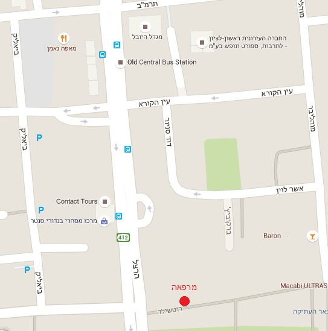
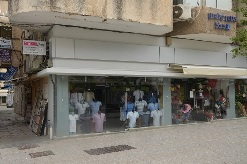

<!DOCTYPE html>
<html lang="he" dir="rtl">
<head>
	<meta charset="utf-8">
	<title>מרפאה גינקולוגית - רופא נשים מומחה, ראשון לציון</title>
	<meta name="viewport" content="width=device-width, initial-scale=1.0">
	<link rel="stylesheet" type="text/css" href="mobile.css">
	<link rel="alternate" href="http://www.shmulman.co.il/index.html" hreflang="en-il" />
  	<link rel="alternate" href="http://www.shmulman.co.il/index_he.html" hreflang="he-il" />
  	<link rel="alternate" href="http://www.shmulman.co.il/index_ru.html" hreflang="ru-il" />
	<script async src="mobile.js"></script>

	<!-- Google analytics -->
	<script>
  		(function(i,s,o,g,r,a,m){i['GoogleAnalyticsObject']=r;i[r]=i[r]||function(){
  		(i[r].q=i[r].q||[]).push(arguments)},i[r].l=1*new Date();a=s.createElement(o),
 		 m=s.getElementsByTagName(o)[0];a.async=1;a.src=g;m.parentNode.insertBefore(a,m)
  		})(window,document,'script','https://www.google-analytics.com/analytics.js','ga');
 		ga('create', 'UA-3759258-1', 'auto');
  		ga('send', 'pageview');
	</script>
</head>

<body onload="ShowSection(URL_Command()),ClearText_he()">
	<!--                      Header & Navigation bar                    -->
	<header>
		מרפאה גינקולוגית של ד"ר שמולמן <a id="header_tel" href="tel:972-3-5372018">Tel:&nbsp972&nbsp3&nbsp5372018</a>
	</header>	
	<nav>
  		<ul id="menu">
    		<li><a href="#" onclick="ShowSection('Home'),
    								 ga('send','event', 'HomeCategory_he', 'HomeAction_he' ,'HomeLable_he')">דף הבית</a></li>
    		<li><a href="#" onclick="ShowSection('About'),
    								 ga('send','event', 'AboutCategory_he', 'AboutAction_he' ,'AboutLable_he')">אודות</a></li>
    		<li><a href="#" onclick="ShowSection('Cost'),
    								 ga('send','event', 'CostCategory_he', 'CostAction_he' ,'CostLable_he')">מחירים</a></li>
    		<li><a href="#" onclick="ShowSection('Contacts'),
    								 ga('send','event', 'ContactsCategory_he', 'ContactsAction_he' ,'ContactsLable_he')">דרכי התקשרות</a></li>
		</ul>
	</nav>

<!-- ************************* HOME *********************************  -->
<section id="Home">
<div id="home_1">
	<p>
		<a href="index_he.html" target="_top">Hebrew</a><br>
  		<a href="index_ru.html" target="_top">Russian</a><br>
  		<a href="index.html" target="_top">English</a>
  	</p>
  	</div>
  	<div id="home_2">
  		
  	</div>
  	<div id="home_3">
  	<p>
  		מרפאה גניקולוגית הוקמה על ידי ד"ר שמולמן, רופא נשים מומחה ב -2008.
		הוא הקפיד על ייחס אישי למטופלים וסבלנות הדרושה עם המטופלות. הטיפול מתבסס על הניסיון הרב שלו. ההתמחויות הן: ייעוץ רפואי, בדיקות מעבדה, קולפוסקופיה, אלקטרוקואגולציה, ריפוי קונדילומות, החדרת הספירלה והפלות (עד 12 שבועות).
  	</p>
  	</div>

  	<!-- ******************************************************************************************************** -->
    <div id="ContainerTermsQuestions">  
	
    <div class="med_questions">
    <ul>
        <p>שאלות ותשובות</p>
        <li><a href="#q1" onclick="ShowQuery_he('q1')">קבלת קהל</a></li>
        <li><a href="#q2" onclick="ShowQuery_he('q2')">בדיקות מעבדה</a></li>
        <li><a href="#q3" onclick="ShowQuery_he('q3')">התקנת ספירלה</a></li>
    </ul>
    </div>

    

<!-- ********************************************************************************************************* -->

    <!-- 1 -->
    <div id="q1">
    <p><b>קבלת קהל</b></p>
    <p>שאלה: מה נכלל במסגרת ייעוץ רופאי?</p>
    <p>תשובה: בדיקה רפואית, בדיקת אולטראסאונד והגדרת הטיפול. סוגי הטיפולים במרפאה הינם ריפוי קליימקס, שיבושי וסת, מחלות דלקתיות, מחלות פטרייתיות, התאמת אמצעי מניעה וריפוי מחלות מין באופן דיסקרטי.</p>
    </div>
    <!-- 2 -->
    <div id="q2">
    <p><b>בדיקות מעבדה</b></p>
    <p>שאלה: האם עלות בדיקת מעבדה נכלל בעלות של ייעוץ רפואי?</p>
    <p>תשובה: עלות בדיקת מעבדה אינו נכלל במסגרת ייעוץ רפואי, אלא תלוי בעלות המעבדה.</p>
    <p>שאלה: מה קובע את עלות בדיקת המעבדה?</p>
    <p>תשובה: העלות נקבעת על ידי המעבדה כתלות בסוג הבדיקה ומתואמת מראש עם הלקוח.</p>
    <p>שאלה: אם במהלך הטיפול עולה הצורך לחזור על בדיקות המעבדה, האם נדרש לשלם מחדש?</p>
    <p>תשובה: עבור כל בדיקה מועבר תשלום נפרד למעבדה ולכן כל בדיקה משולמת בנפרד.</p>
    </div>
    <!-- 3 -->
    <div id="q3">
    <p><b>התקנת ספירלה</b></p>
    <p>שאלה: מה כוללת עלות התקנת הספירלה?</p>
    <p>תשובה: המחיר כולל בדיקה רפואית, ביצוע בדיקת אולטרסאונד, התקנת הספירלה ועלות הספירלה.</p>
    <p>שאלה: למה המחיר להתקנת הספירלה משתנה?</p>
    <p>תשובה: המחיר תלוי בסוג הספירלה כאשר הסוג המועדף נקבע בהתייעצות עם הרופא.</p>
    </div>
    
     
</div>

</section>

<!-- ************************* ABOUT *********************************  -->
<section id="About">
	 
  	<p>
	ד"ר מיכאל שמולמן, מומחה במיילדות וגינקולוגיה בעל ניסיון של 30 שנה בתחום. התחיל את דרכו בבית החולים במוסקבה כרופא נשים וב- 20 שנים אחרונות עבד בארץ בבתי חולים "סורוקה" בבאר שבע ו"קפלן" ברחובות. כעת הרופא עובד בקופות חולים "כללית" ברחובות ו"לאומית" באשדוד. ד"ר שמולמן זוכה לביקורות מצוינות באתרי האינטרנט השונים במסגרת עבודתו בקופות החולים ומומלץ בין המטופלות, ומתאפיין ביחס אדיב ומקצועי. יומיים בשבוע ד"ר שמולמן מקבל במרפאה פרטית במרכז ראשון לציון. המרפאה בראשון לציון נפתחה לאור הביקוש הרב גם ממטופלות מחו"ל ללא כיסוי ביטוחי ישראלי, אך בפועל זוכה לביקורים גם מלקוחות בארץ המחפשות רופא פרטי.
  	</p>
</section>

<!-- ************************* CONTACTS *********************************  -->
<section id="Contacts">

	<!-- Address -->
	<div>
		<h4> כתובת </h4>
		<p> 	רח' רוטשילד 34, ראשון לציון<br>
					ליד התחנה המרכזית הישנה<br> 
					Tel. 03-5372018 <br>
					e-mail:&nbsp;<a href="mailto:michael@shmulman.co.il">michael@shmulman.co.il</a></p>

		<!-- Hours -->
		<h4> שעות קבלה </h4>
		<p> 	ב' 16:00 - 19:00 <br>
					ד' 12:00 - 14:00 </p>
	
		<!-- Buses -->
		<h4> קווי אוטובוס </h4>
		<p> 5, 9, 10, 11, 12, 13, 14, 17, 18, 20, 21, 80, 83, 85 <br>
	  	139, 152, 154, 164, 166, 174, 181, 201, 205, 226, 247, 274, 275, 294  <br>
	  	301, 313, 318, 319, 330, 367, 371, 377, 393, 432, 433, 677 </p>
	


		<!-- Car parking-->
		<h4> חנייה עם רכב פרטי </h4>
		<p> החניונים בתשלום ברח' ביאליק מסומנים על המפה באות "P"</p>
	</div>

	<!-- Map -->
	<div>
		
		
		<p> הקינילקה מסומנת עם נקודה אדומה <br>
		(נמצאת במרפאה של ד"ר לישנבסקי)</p>
	</div>

	<!-- Pictures -->   
	<div width="200">
    	
    	
		
	</div>
</section>

<!-- ************************* COST *********************************  -->
<section id="Cost">
	<table border="1">
<tr>
	<!-- <th width="200">&nbsp;</th> -->
	<th> מחיר כולל מע"מ </th>
	<th>פרוט</th>
</tr>
<tr>
	<td><b>ייעוץ רפואי</b>
	<br> ש"ח 350 </td>
	<td>
		בדיקה רפואית, אולטראסאונד, הגדרת הטיפול. סוגי הטיפולים: 
		<ul>
			ריפוי קליימקס <br>
			שיבושי וסת <br>
			מחלות דלקתיות <br>
			מחלות פטרייתיות <br>
			התאמת אמצעי מניעה <br>
			ריפוי מחלות מין באופן דיסקרטי
		</ul>
	</td>
</tr>
<tr>
	<td><b>בדיקות מעבדה דחופות</b>
	<br>החל מ- 200 ש"ח</td>
	<td>&nbsp;</td>
</tr>
<tr>
	<td><b>קולפוסקופיה</b>
	<br>החל מ- 500 ש"ח</td>
	<td> נהמחיר כולל
	<ul>
	בדיקת צוור הרחם באמצעות מכשיר אופטי (קולפוסקוף)<br>
	לקיחת דגימה (ביאופסיה) במקרה הצורך. 
	</ul>
	ביצוע בדיקת מעבדה לביאופסיה הינה בעלות נוספת שנע בין 300 ל- 500 ש"ח.
	</td>
</tr>
<tr>
	<td><b>אלקטרוקואגולציה</b>
	<br>החל מ- 700 ש"ח</td>
	<td>צורב אזורי צוואר רחם מושפעים (במקרה הצורך) 
		לאחר קבלת תוצאות הביאופסיה.
	</td>
	
</tr>
<tr>
	<td><b>ריפוי קונדילומה</b>
	<br>החל מ- 700 ש"ח</td>
	<td>תלוי בכמות הטיפולים הנדרש</td>
</tr>
<tr>
	<td><b>התקנת התקן תוך רחמי ומירנה</b>
	<br>החל מ- 550 ש"ח</td>
	<td>&nbsp;</td>
</tr>
<tr>
	<td><b>הפלה</b>
	<br>החל מ- 3500 ש"ח</td>
	<td>המחיר כולל 
	<ul>
		בדיקה רפואית מקדימה<br>
		תשלום על חדר ניתוח בבית חולים וביצוע הניתוח<br>
		הרדמה מבוצעת על ידי רופא מרדים מקצועי
	</ul>
	</td>
</tr>
</table>
</section>

<!--               Footer  Address & Hours                  -->
<footer>
	<!-- AdSense Add -->
	<div>
	<script async src="//pagead2.googlesyndication.com/pagead/js/adsbygoogle.js"></script>
	<!-- BannerAdd_234x60 -->
	<ins class="adsbygoogle"
     	style="display:inline-block;width:234px;height:60px"
     	data-ad-client="ca-pub-2825642468318593"
     	data-ad-slot="1119345478"></ins>
	<script>
		(adsbygoogle = window.adsbygoogle || []).push({});
	</script>
	</div>

	<!-- Flags and Address -->
	<div>
		<a href="index_he.html" target="_top">
			
		</a>
		<a href="index_ru.html" target="_top">
			
		</a>
		<a href="index.html" target="_top">
			
		</a>
	</div>
	<p> רח' רוטשילד 34, ראשון לציון <br>
		ב' 16:00 - 19:00<br>
		ד' 12:00 - 14:00<br>
	</p>
</footer>
	
</body>
</html>